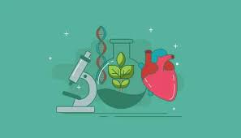

BIOLOGIA
Me gusta la biología porque me permite entender cómo funciona la vida en todas sus formas. A través de esta materia puedo aprender sobre el cuerpo humano, los animales, las plantas y los microorganismos, y comprender cómo cada ser vivo cumple una función importante en el equilibrio del planeta. También me parece interesante descubrir cómo ocurren procesos como la respiración, la reproducción y la evolución, ya que me ayudan a conocer mejor mi propio cuerpo y el entorno que me rodea.
La biología no solo explica cómo vivimos, sino también cómo podemos cuidar nuestra salud y proteger el medio ambiente. Por eso me gusta, porque combina conocimiento científico con la posibilidad de generar conciencia y mejorar nuestra relación con la naturaleza

VOLVER AL MENU